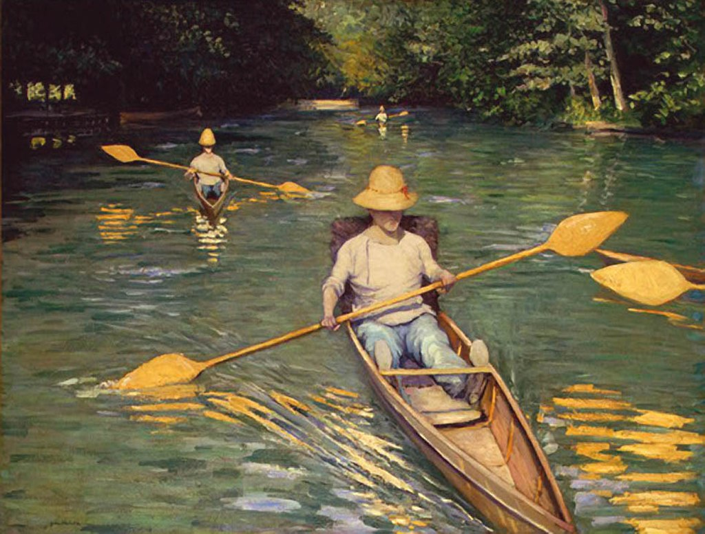

<head>
<meta charset="UTF-8" />
<meta name="keywords" content="drawing, painting" />
<meta name="description" content="drawings by Sunjy" />
<title>Sunjy</title>
<link rel="shortcut icon" type="image/x-icon" href="../../mImages/mCommon/favicon.ico" media="screen" />
<link rel="stylesheet" type="text/css" href="../../mCsses/mCommon/mCssA.css" />
<link rel="stylesheet" type="text/css" href="../../mCsses/mCommon/mCssB.css" />
<link rel="stylesheet" type="text/css" href="../../mCsses/mCommon/mCssC.css" />
<link rel="stylesheet" type="text/css" href="../../mCsses/mCommon/mCssD.css" />
<link rel="stylesheet" type="text/css" href="../../mCsses/mContent/mCssA.css" />
<link rel="stylesheet" type="text/css" href="../../mCsses/mContent/mCssB.css" />
<link rel="stylesheet" type="text/css" href="../../mCsses/mContent/mCssC.css" />
<link rel="stylesheet" type="text/css" href="../../mCsses/mContent/mCssD.css" />
</head>
<script type="text/javascript" src="../../mScripts/mContent/mContentAA.js" /></script>
<script type="text/javascript" src="../../mScripts/mContent/mContentAB.js" /></script>
<script type="text/javascript" src="../../mScripts/mContent/mContentAC.js" /></script>
<script type="text/javascript" src="../../mScripts/mContent/mContentAD.js" /></script>
<script type="text/javascript"></script> 
<script type="text/javascript">
document.write('<div class="mImgAbsolute"></div>');
/*
document.write('<p class="mFontSizeBColor" />From a white paper...</p>');
document.write('<table class="center"><tr><td>');
document.write('');
document.write('</td></tr></table>');
*/
</script>


<script type="text/javascript">
document.write('<p class="mFontSizeBColor" />Skiffs on the Yerres</p>');
document.write('<p class="mFontSizeSColor" />“Skiffs on the Yerres” by Gustave Caillebotte depicts three one-person skiffs being paddled along a river with its banks densely wooded.<br><br>The skiff in the foreground dominates the painting. It is an open canoe designed to accommodate a single occupant. All the rowers appear to be wearing a straw-colored cloche hat.<br><br>The dominant figure has a small red ribbon around his hat, a white smock top, and light blue trousers. His legs extend in front of him to brace against a cross-bar. Behind him, a backrest extends the lengths of his back.<br><br>The rowers are using a double-ended paddle with a heart-shaped blade at each end.  The bows of the boat produce patterned ripples in the water, in which the bright color of the paddle and man’s bright colors are seen in the reflection.<br></p>');
document.write('<table class="center" /><tr><td>');
document.write('<br>The skiff in the foreground dominates the painting. It is an open canoe designed to accommodate a single occupant. All the rowers appear to be wearing a straw-colored cloche hat.<br><br>The dominant figure has a small red ribbon around his hat, a white smock top, and light blue trousers. His legs extend in front of him to brace against a cross-bar. Behind him, a backrest extends the lengths of his back.<br><br>The rowers are using a double-ended paddle with a heart-shaped blade at each end.  The bows of the boat produce patterned ripples in the water, in which the bright color of the paddle and man’s bright colors are seen in the reflection.<br>" />');
document.write('</td></tr></table>');
</script>


